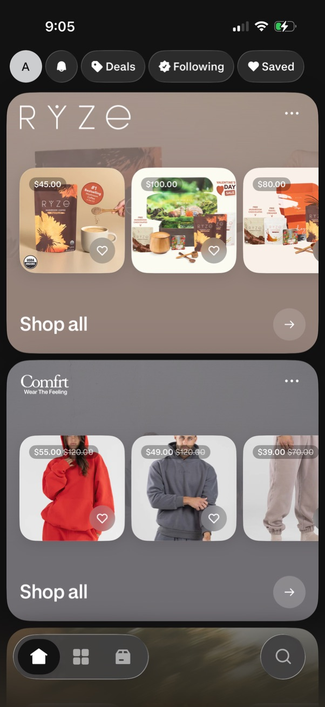
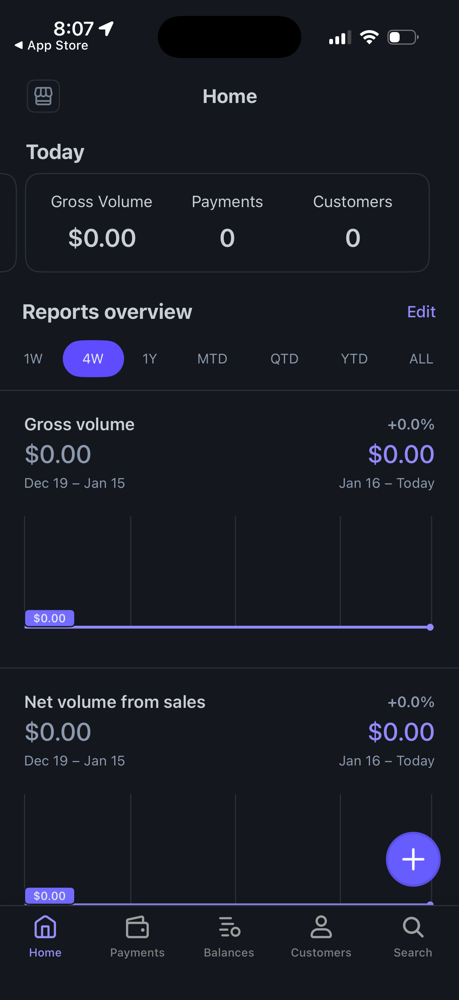
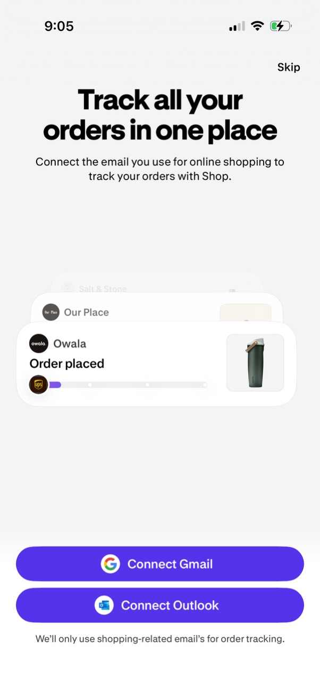

Quick References · 2026-06-02
whit-i-want overall UI references
이 앱은 생일 위시리스트를 만들고 공유하는 서비스입니다. 공개 페이지는 친구에게 보내는 감성 카드처럼 보여야 하고, 관리자 화면은 선물, 메시지, 설정을 반복 관리하는 차분한 운영 UI가 되어야 합니다.
Local Context
서비스 구조
- 문서 기준 주요 화면은 홈, 로그인, 온보딩, 관리자 대시보드, 선물 관리, 메시지함, 설정, 공개 위시리스트입니다.
- 공개 페이지는
/b/[slug]이고, 친구가 로그인 없이 선물과 계좌 안내를 보고 마음을 남기는 흐름입니다. - 관리자 화면은
/admin/**아래에서 선물 등록, 상태 변경, 메시지 확인, 공개 링크 설정을 처리합니다.
현재 코드에서 확인한 화면 성격
app/b/[slug]/page.tsx:pub-page,pub-card,pub-btn로 공개 테마 토큰을 이미 사용합니다.app/admin/layout.tsx: 사이드바와 모바일 탭으로 관리자 내비게이션을 구성합니다.app/admin/wishes/page.tsx: 왼쪽 추가 폼, 오른쪽 편집 카드 목록 구조입니다.app/page.tsx: 홈은 아직 픽셀/Y2K 하드코딩 시각 언어가 많이 남아 있습니다.
Patterns
1. Public Wishlist: 선물 카드 피드
공개 페이지는 가격, 이미지, 저장/선택 액션이 한눈에 보이는 카드 피드가 잘 맞습니다.
현재 PublicWishCard 구조도 이미지 영역, 제목, 상품 링크, 진행률이 이미 분리되어 있어 이 패턴을 바로 흡수할 수 있습니다.

┌──────────────────────────────┐ │ /b/minji [내 것도 만들기] │ ├──────────────────────────────┤ │ 받고 싶은 선물들 │ │ [요약: 4개] [모인 마음 73%] │ ├──────────┬───────────────────┤ │ image │ 선물 이름 │ │ │ 설명 / 링크 │ │ │ ₩23,000 / ₩45,000 │ │ │ ███████░░░ │ └──────────┴───────────────────┘
2. Public Contribution: 기여 금액과 메시지를 같은 문맥에 두기
MyRegistry와 Babylist의 그룹 기프팅 자료는 고가 선물이나 현금 펀드에 여러 사람이 기여하는 흐름이 일반적이라는 근거가 됩니다.
이 앱의 공개 참여 폼은 이미 wishItemId, amount, senderName, body를 한 번에 받으므로,
선물 카드 아래나 옆에 "마음 보내기" 폼을 더 짧게 붙이는 방향이 자연스럽습니다.
┌──────────────────────────────┐ │ 마음 보내기 │ │ 선물 선택 [무선 헤드폰 v] │ │ 금액 [10000] │ │ 이름 [선택] │ │ 메시지 [축하해!] │ │ [마음 보내기] │ └──────────────────────────────┘
3. Admin Dashboard: 숫자는 작게, 다음 행동은 크게
Stripe Dashboard의 모바일 홈은 핵심 지표와 기간 선택을 위에 두고 세부 리포트를 아래로 내립니다.
현재 app/admin/page.tsx의 요약 카드가 모두 0으로 고정되어 있으므로, 실제 선물 수, 메시지 수, 모인 금액,
공개 링크 복사 같은 다음 행동을 상단에 정리하면 관리자 첫 화면의 목적이 분명해집니다.

4. Admin Lists: 카드 목록에서 필터 가능한 목록으로 진화
Linear와 Stripe의 목록 화면은 항목을 한 줄씩 빠르게 스캔하고 상태나 세그먼트로 좁히는 구조입니다. 현재 선물 관리와 메시지함은 카드 목록이라 초반에는 충분하지만, 항목이 늘면 상태 필터, 검색, 정렬, 행 액션이 필요해집니다.


구현 참고로는 shadcn/ui Data Table의 필터, 정렬, 행 액션 패턴이 현재 스택과 가장 가깝습니다.
5. Admin Forms: 한 화면에 모든 것을 넣되, 섹션 경계를 강하게
설정 화면은 프로필, 공개 페이지, 계좌 안내가 한 폼에 들어가므로 입력 묶음이 핵심입니다. Stripe의 생성 폼처럼 필수/선택 라벨을 명확히 붙이고, 저장 버튼은 하단 고정 또는 섹션 후방에 두는 패턴이 맞습니다.


6. Onboarding/Login: 한 번에 한 목적만 보여주기
현재 app/onboarding/page.tsx는 표시 이름, 생일, 소개를 한 카드에 넣고 있습니다.
Shop의 온보딩 스크린처럼 한 화면에 하나의 목표와 하나의 강한 CTA만 남기면 첫 사용자가 덜 헤맵니다.

Reference Links
| 구분 | 레퍼런스 | 볼 지점 |
|---|---|---|
| Public wishlist | Lazyweb · Shop | 저장 상품, 브랜드 컬렉션, 구매/추적 앱의 카드 피드 |
| Gift registry | MyRegistry · universal registry guide | 한 링크에 여러 스토어 상품과 현금 펀드를 모으는 구조 |
| Gift registry | Giftster · family wishlist registry | 중복 선물 방지, 가족/친구 공유, 비공개 조율 |
| Group gifting | Babylist · group gifts | 선물 목표 금액에 여러 사람이 원하는 만큼 기여하는 흐름 |
| Admin dashboard | Lazyweb · Stripe Dashboard canvas | 운영 지표, 고객 목록, 생성 폼 |
| Admin list | Lazyweb · Linear canvas | 세그먼트 탭, 이슈 목록, 설정 행 |
| Current stack | shadcn/ui · Data Table | Next.js/Tailwind/shadcn 기반 테이블 필터, 정렬, 행 액션 |
| Current stack | shadcn/ui · Dashboard blocks | 사이드바, 차트, 데이터 테이블이 있는 앱 쉘 |
How This Should Influence The App
홈
브랜드 소개보다 실제 공개 위시리스트 미리보기를 첫 화면 신호로 키우는 쪽이 좋습니다. 현재 홈은 픽셀 카드 미리보기가 있어 이 방향과 맞습니다.
공개 페이지
카드 피드와 기여 폼을 더 가깝게 붙이고, 진행률/금액/상품 링크를 한 번에 스캔되게 해야 합니다.
관리자
카드형 편집 UI는 유지하되, 선물 수가 늘어나는 순간 필터 가능한 테이블 또는 조밀한 리스트로 전환할 수 있게 설계해야 합니다.
Limits
- Lazyweb MCP의
lazyweb_search,lazyweb_health도구는 현재 세션에서 노출되지 않았습니다. - 따라서 이 파일은 Lazyweb 공개 웹 페이지와 일반 웹 검색 결과를 사용한 fallback 리포트입니다.
- 로컬 앱 실행 화면은 캡처하지 않았습니다. 현재 상태 근거는 문서와 소스 코드 읽기입니다.